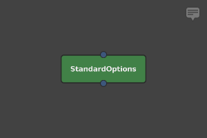
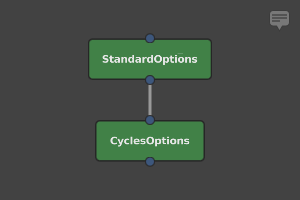
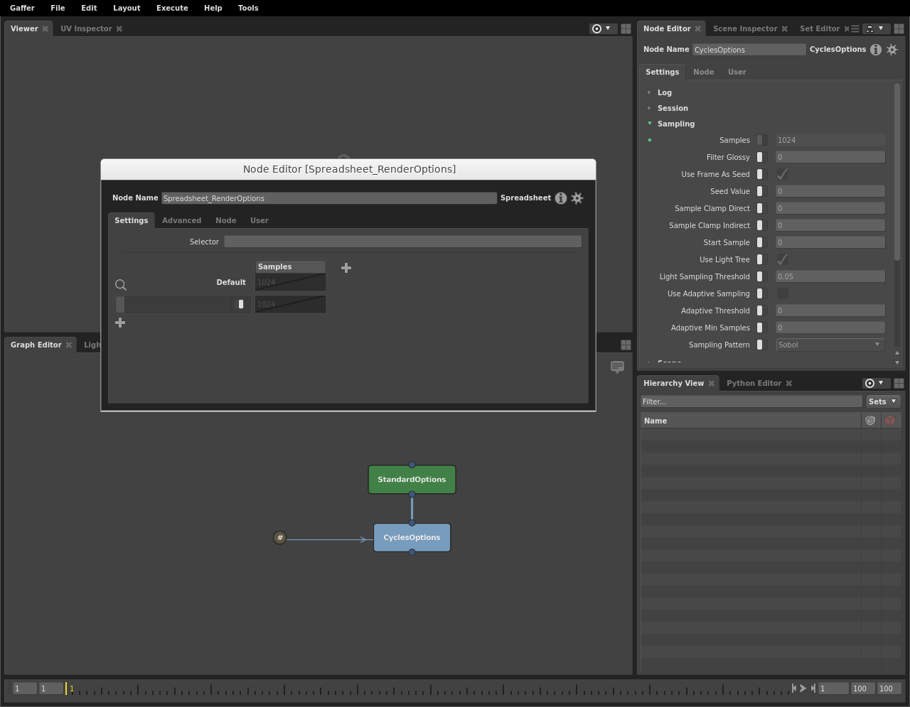
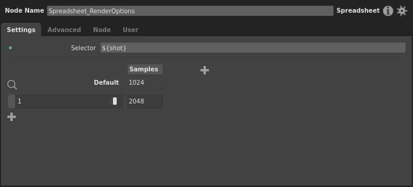
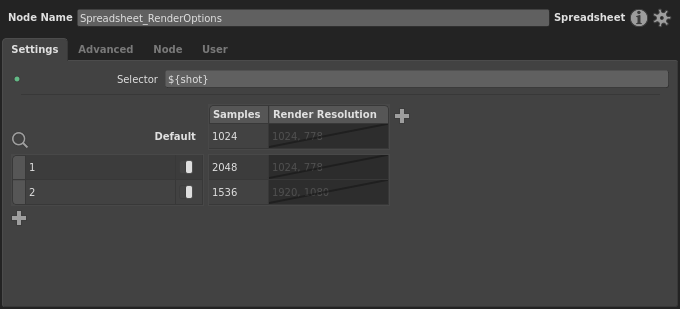
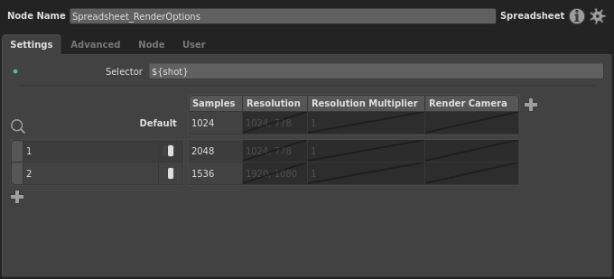
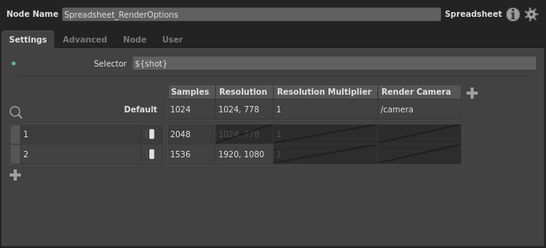
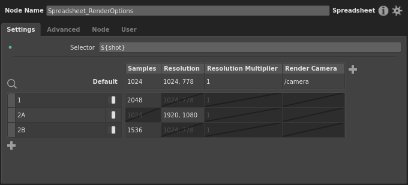

Tutorial: Setting Up a Spreadsheet
In this tutorial, we will cover how to set up a Spreadsheet node in a graph from start to finish. As you will see throughout, spreadsheets are like enhanced Expression nodes: they let you set up different conditional plug values without writing multiple if statements in Python. Just like Expression nodes, Spreadsheet nodes are open-ended and have a wide variety of uses, so what we show here only represents one possible case.
We will be creating a multi-shot graph designed to batch render four shots, which changes its render options based on the current shot. For simplicity, we will omit the actual asset and task/preview nodes, the setups for which are covered in the Assembling the Gaffer Bot tutorial. You can view a working sample of this graph in Help > Examples > Rendering > Multi-shot Render Spreadsheet.
Adding the Options nodes
First, we’ll create a StandardOptions node (Scene > Globals > Standard Options). We will use it to define the render resolution and camera used for each shot.
Next, connect a downstream CyclesOptions node (Cycles > Globals > Options). We will use it to adjust the render samples per shot. You can use other renderers’ equivalent nodes, but the particular options and their names will differ.
Adding a global Context Variable
Now, in order for our multi-shot graph to work, we need to declare and initialize a Context Variable that will determine the current shot. It would be most useful if this value were available at all times, so let’s make this a global Context Variable. Go File > Settings… to open the graph’s settings. In the Variables tab, click , then select Add > String from the context menu. For the variable’s name on the left, type shot, and for the value, type 1.
Now the graph will have a Context Variable that defines the current shot.
Creating a Spreadsheet node
It’s time to create and start setting up a Spreadsheet node to vary the options based on the current shot. Select the CyclesOptions node, then, in the Node Editor, expand the Sampling section. Right-click the Samples plug’s label, and select Create Spreadsheet…. A new Spreadsheet node will appear in the Graph Editor, and a new Node Editor window focused on it will open. It will have a column corresponding to the Samples plug with its current value.
You will notice the column’s cells are disabled at first – this is because the plug we connected has an enabled switch that was turned off. The connection action assumes the plug should remain in its initial state before connection, unless we specify otherwise. We can keep this in mind if we need to run test renders with and without our changes: simply disabling the appropriate cell in the current shot’s row will make it fall back to the default.
For the time being, let’s make the spreadsheet vary this one plug. In the Node Editor window, type ${shot} for the Selector plug. Notice how we use the ${<variableName>} variable substitution syntax here. If we wanted, we could include other text, like a path or a multi-part string such as ${sequence}/${shot}.
The spreadsheet is now prepped to expand our one Context Variable, and we can dictate each render’s samples based on the shot.
Adding rows and columns
Let’s add a row for our first shot. You’ll notice that beneath the Default row there’s a blank row. This will be the first row that is compared against the selector during processing. Click the row’s pattern on the left, then type the first shot number, 1. Let’s assume this shot is noisy, and we need more samples. Enable the row’s first cell (right-click > Enable Cell), and set its value to 2048 (double-click it, then type the number).
You’ll notice that the Default row has taken the value of the Samples plug, 1024, and is disabled. This will be the plug’s fallback value for when ${shot} doesn’t match any row’s pattern, which would be the case if a new shot is added to our project. If we wanted a different fallback value, we could enable the cell and change it. Since this graph is responsible for the main render settings, let’s specify the render samples in all cases. So, enable the column’s cell in the Default row.
Before we go any further, let’s adjust the formatting of the spreadsheet, and make our column thinner so it takes up less space. Double-click the right edge of the column to automatically resize it.
Next, let’s add a new row for our second shot. Click and a new row will be added. Let’s give it a pattern of 2 for shot 2. Let’s assume this shot has strong motion blur that requires more samples than the default to render cleanly. Enable the Samples cell, and give it a value of 1536.
Let’s connect a second plug to the spreadsheet before adding any more rows. Select the StandardOptions node. In the Node Editor, right-click the Resolution plug label (under the Camera section), then select Add to Spreadsheet > Spreadsheet. This little menu is convenient when you need to connect a plug to an existing spreadsheet.
Doing so creates a new column named Render Resolution, though we’re free to adjust how this is presented by editing the column label. Right-click the column header, then select Set Label… from the context menu. Type Resolution into the dialog and confirm. Afterwards, double-click the right edge of the column to automatically resize it.
Much better. Now go ahead and add the Resolution Multiplier and Render Camera plugs.
Dressing up the Spreadsheet node
While we’re at it, so we don’t confuse our spreadsheet with any future spreadsheets, let’s give it a proper name. In the Graph Editor, right-click the Spreadsheet node, then select Show Name. It will now appear like a regular node with its full name visible. Back in the Node Editor window, give it a name of Spreadsheet_RenderOptions.
Great! This will make wrangling multiple spreadsheets in the graph much easier.
Next, adjust the new columns and fill their values like so:
Accounting for sub-conditions
Let’s pretend there has been a change of plans on the project, and shot 2 has been split into shots 2A and 2B, and there could even be further sub-divisions down the line. We could also assume that only 2B has the motion blur issue, and that only 2A needs the adjusted resolution. We’ll need to account for 2A and 2B, and any future shot names starting with 2. So, edit row 2 to be 2A, and add a new 2B row.
Next, let’s account for any further sub-shots of 2. This is where we can put wildcards into play. Like many strings in Gaffer, a spreadsheet’s patterns support wildcards. So, to account for any letter after 2, we can simply use 2* for the pattern. Let’s add a new row, setting up these shots to render with an alternate camera and resolution multiplier.
Tip
You may be wondering, why doesn’t the general case go first? During processing, a spreadsheet’s rows are checked from top to bottom, and apply the first row that matches. So, if we put the 2* row above 2A and 2B, it would apply for all of the sub-shots. As a general rule, if you want to account for both specific cases and a general case in patterns, you must put the general cast last.
Excellent! The graph will now render correctly for 2A and 2B, and will respond to any further sub-shots of 2 that we haven’t anticipated.
Conclusion
As you can see, the Spreadsheet node is a powerful tool, with an interface that lets you easily map values to various specific conditions.
This was a fairly simple spreadsheet, demonstrating part of the render setup portion of a CG pipeline. Spreadsheets have a place in any graph where lots of bespoke or manually-adjusted variation is needed for one or more plugs.